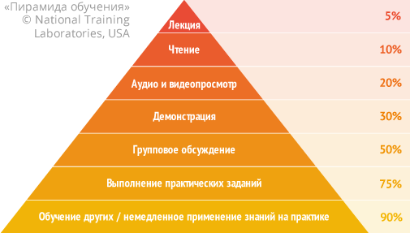

JavaScript courses
Here we make "live" courses on professional JavaScript with professional developers as teachers of how to think in JavaScript, write in a simple, fast and efficient manner.
Quality
It’s the essential part. We learn development at a high professional standard
Live webinars
Learning live from a developer gives a completely different result than watching online videos
Support
You will get personal advice and feedback on your code
Result
Those who you actively participate, solve tasks, become good developers
Guarantee
Money back guarantee if something is wrong
Courses program, sign up for the courses
- JavaScript/DOM/Interfaces
JavaScript/DOM/Interfaces
"Right" course on professional JavaScript, to start thinking in JavaScript, write code and create interfaces in a simple, fast and effecient manner.
The price is $450, the course lasts for 2 months.
- Node.JS
Node.JS
Professional development on the Node.JS platform (server-side JavaScript), using modern frameworks and technologies.
The price is $270, the course lasts for 1 month.
- Angular
Angular
Professional development on the modern Angular framework.
The price is $270, the course lasts for about 1.5 months.
- React.JS
React.JS
Professional development on React.JS.
The price is $270, the course lasts for 1 month.
Teachers
The courses are held by experienced and qualified professionals only. Each teacher has both practical and theoretical knowledge gained during the years of working in the field of web development.
 Sergey Zelenov
Sergey ZelenovOne of core developers of this website.
I have more than 9 years experience in software development. Last 6 years I have been working closely with Node.js.
At the moment I’m creating highloaded system for working with geo-data in Moovel using Node.js. As soon as system’s architecture is based on microservices, technology stack is not limited to Node.js; Python, Clojure, Java and Scala are also used in various projects.
In teaching process I’m focusing primarly on the practical aspects of writing qualitative, testable and reusable code.
 Artem Mezin
Artem MezinA Senior Frontend Engineer with over 7 years of experience building rich web applications and 4 years experience in technical management. Always looking for ways to improve the quality of produced products and share the acquired experience.
I am interested in high loaded web services with a complex architectural design. Eager to learn the latest technologies and approaches.
 Stepan Suvorov
Stepan SuvorovJavaScript Engineer and consultant, speaker, active frontend community member. Doing programming more than 12 years (8 years being JavaScript lover and 5 years playing with Angular).
Currently I’m VP Engineering at Studytube, https://studytube.nl.
 Roman Yakobchuk
Roman YakobchukI’m a software engineer who started programming somewhere in a childhood. Right now I’m working as a Front End Architect at Wix.com.
I’ve been programming frontend for about 5 years, using React.JS from earliest times and teaching React and JS for the last 4 years.
I believe we should look at our profession from different sides, so I have an exerience in other client and server-side languages that helps to build solid and successful apps.
Feedback on the courses
Guarantee
If you don't like our course for any reason, you can get money back.
Let us know during the first week of the course, and then your participation will cease and you get a full refund.
Opinions of professionals
- Dmytro Polyakov
Frontender at Google USA, Youtube, over 15 years of experience being a leading developer and architect
Participated in master-classes, learned a lot of new thingns. I love professional level of the material, examples and real-life patterns of use. Greatly recommend the courses for those who want to keen up their knowledge and become a professional. - Shahar Talmi
Architect at Wix, leading Wix frontend infrastructure team
Guys are doing great courses! They are not just good teachers, they are professional developers who are using that tools in their everyday practice. This means you're always getting up to date info, best practices and will have an opportunity to understand how to use it in your real-life project. This courses became a starting point in learning React for some of our Wix developers and got a nice feedback.
Our participants
We've been running workshops for professionals in the sphere of JavaScript since 2006, courses – since 2011. During this time, thousands of people from hundreds of companies have completed trainings, it’s hard to count them all. Particularly, employees of the following companies attended workshops and courses:
Hundreds of feedbacks on the trainings were posted, which now you can find here and here, you can read some of them on this page as well. You can find professionals’ opinion about the courses below.
Frequently asked questions
Online-meetings (webinars) are scheduled twice a week. We study complex topics online, discuss homework, how to do it better, the teacher answers questions. After a webinar, there's a homework with tasks and materials.
At home, students do the homework, study materials. There's a group chat available for questions, and the teacher is also there.
After lessons, recordings are available to repeat and review in case of a missed event, but you should attend the lessons. An active participation is crucially important, doing homework and asking the teacher is the right way to move foorward. That's the only way to make sure you really grasped the knowledge and got it right.
The program is intense at all courses. Usually, people who come to us, are smart enough and learn well. In case if someone got stuck we personally help him or make additional lesssons if needed. The thing is: if there's a problem, please don't be silent, tell us. We have many means to help you, it's important for us that you learn well.
Most people and some companies prefer bank cards. Some like paypal. Wire transfers are also possible. If you want an invoice, there'll be an invoice.
Yes, we give an digital certificate. But please note that in our area, skills and knowledge matter the most, not papers. Certificates are usually put aside during an interview.
Up to you to decide.
We don't do courses on HTML/CSS/PHP/Photoshop and other stuff.
We only teach JavaScript and related technologies. And try to do it as good as possible.
There are recordings. And some courses have other video to download. But the course is taught by a person, an experienced developer. We regularly meet, because that allows you to show the code, discuss how it goes, get a review, ask questions, and so improve your skills and code, raise skills to a much higher level than it is possible with lectures or automated courses.
Yes, we have recordings, but for those who want to repeat lessons or occasionally missed them. They are viewable under Mac/Windows. We don't sell them, because the quality of education is of the most impoortance for us. Without solving tasks on your own and getting a feedback from a teacher, there's no way to ensure the quality, except for the simplest things. Our approach guarantees much better outcome than in downloadable or "robotic" courses, if you actively participate.
The practice shows that programming languages, just like spoken languages are best studied from a teacher.
JavaScript is a little special. It's very easy to start doing something. But the difference between a man who picked up something at the surface and a professional who embraced JS zen is colossal. The former one makes buttons, the latter one makes Gmail for the world.
The purpose of the curses – is to straighten up and simplify the latter road and walk its beginning together, so that you don't turn a wrong path. And after it whatever you want – be it a Gmail or a menu – up to you to decide. The quality and speed of development is what matters.
Courses with a teacher – is a powerful and fast way to learn. If you fully participate, it guarantees actual, deep knowledge.
Our purpose is not just to learn functions. Yes, that's needed, but the main thing is to "think in Javascript" and develop easy to understand, good code, without mistakes, with the right structure.
Below you can see a classic "Pyramid of learning". At the left, there are average percentage of acquired knowledge. The top four levels refer to solo studies. The bottom three – to studying in groups, and in particular, courses.
As of now, several thousand of people already attended the courses. Could be much more, but our aim is not quantity, but quality.
All participants, like you, have access to Google, books and javascript.info. But everone wants to improve. They decided to attend courses, and it seems they're quite glad they did it.
Courses – is investment into yourself. The efforts that allow to advance fast. Where do you want to be after few months/years?
Maybe, it makes sense to level up?
A funny piece of advice for many beginners is: «read books, go to work, write scripts and you'll learn». It's partially true – indeed, one should develop, get experience.
But referrinng to "learning" – that's not so simple in practice. People can work for a long time, but their code quality does not grow.
We all know, companines nened results. They lack good developers. In modern technologies, people is everything. Corporations fight for them, spend money and resources...
If people grew up fast in the process of work – there would be no enormous spending of resources to find developers..
For a company, to teach people on its own – is usually much more expensive than hire those who are already good. So they prefer to pay more to a good developer.
That's a reality easily observable in the world. That's why courses exist. Good courses can give a lot, if they're indeed good courses.
Working a new course takes a long time, to make an optimal program and include all the important stuff, and also polish it on test groups. If you'd like to learn about new courses, request a notification here.
Do you have another question? Ask it in the comments below or write me an email iliakan@javascript.info (I check the mailbox regularly), and in an urgent cases you can call me +79035419441.
Comments
<code>tag, for several lines – use<pre>, for more than 10 lines – use a sandbox (plnkr, JSBin, codepen…)